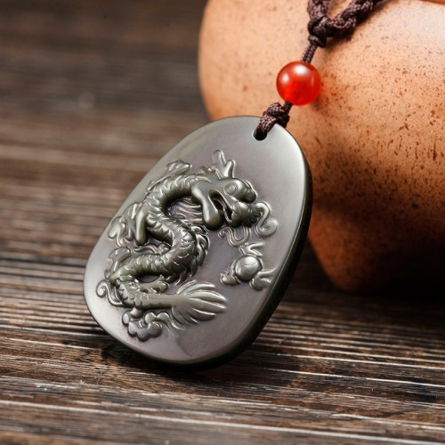

Tips：农历生肖运势即将进入2018年狗年，属鸡2018年运势及运程抢先看，新年早开运，狗年求吉祥！
属鸡2017年本命年运势及运程详解
属鸡的年份：2005、1993、1981、1969、1957、1945年。
属鸡的年龄查询：属鸡的今年多大
属鸡的人2017年本命年事业运势
子玉风水大师点评：年值太岁 凡事留意
生肖属鸡的人，今年遇2017年丁酉鸡年，即俗语所谓本命年！坐在太岁头上，本已岌岌可危，更兼命宫中凶星众多，而又无吉星化解，所以今年运势低沉，诸多困阻！工作方面节外生枝，必须谋定而后动，以免被人得以乘虚而入，一败涂地。因有“地杀”凶星照命，预兆今年将会有不少是非及纷争，必须及早设法化解，以免拖延愈久而变得愈难解决！建议及时奉请【子玉风水化太岁增庆福袋】，以化解本命年犯太岁之灾。请记紧以和为贵，切勿针锋相对而两败俱伤。此外，因有“指背”凶星出现在命宫中，这警示今年易惹小人，而且背后会有不少闲言闲语，所以今年对小人必须敬而远之，尽量保持低调，并必须谨慎言行，洁身自爱，以免成为小人的攻击对象。今年在努力化解工作困阻之余，并需小心注意人身安全，以免惹来血光之灾。属鸡的人，今年凶星汇集，故此工作进展诸多困阻，必须谋定而后动，以免一败涂地。此外，今年会有诸多是非纷争，切勿针锋相对，以免两败俱伤。今年工作诸多阻滞的月份，是农历正月、二月、五月、七月、九月以及十二月；在以上这几个月期间，处理业务必须加倍小心谨慎。今年工作较畅顺的月份，是农历三月、四月及十一月。

属鸡人2017年本命年财运精准预测
子玉风水大师点评：量入为出 慎防侵吞
属鸡的人今年财星破损，正财横财俱不宜憧憬；故此不宜作重大投资，投机性买卖更是可免则免，以免输得焦头烂额；此外，并需小心查看各项收支账目，以防被人盗用侵吞钱财。年尾必须锁好家中及办公室门窗，以免有盗劫之灾。今年理财的原则，是以节流为重，尽量做到量入为出，以免出现经济危机。今年财运最低迷的月份，是农历二月、六月、七月、九月及十二月；正月很可能要破财挡灾，七月需防钱财大量流失，年尾则需慎防盗劫。今年财运较佳的月份，是农历的三月、四月及十一月，好好把握机会开源节流。出门求财，可查一下今年财神方位，择吉日而行。
属鸡人2017年本命年健康运势
子玉风水大师点评：切勿涉险 远离利器
属鸡的人，今年健康情况欠佳，必须小心保养，以免病魔得以乘虚而入！因有“伏尸”照命，这警示今年易惹血光之灾，必须密切注意人身安全，应尽量远离危险地区；攀山及游水均需密切注意安全第一，切勿疏忽大意！此外，因又有“剑锋”凶星出现在命宫中，这警示易被刀剪斧锯等利器刺伤割伤，所以使用这些锋利的工具时，必须格外小心谨慎，并需尽量避免与人剧烈争执口角！今年健康易出问题的月份，是农历的正月、二月、六月、七月、九月；年尾则需密切照顾年老长辈的健康及安全。
属鸡人2017年本命年婚姻运势
子玉风水大师点评：感情随缘 放开怀抱
属鸡的人，今年情怀落寞，难与异性擦出感情火花，但切勿强求；只能顺其自然，因为强求无益，否则很可能误己误人！今年会有以自我为中心的倾向，罔顾他人的感受，以致人缘欠佳，有孤独无伴的凄凉感受；必须多些开放自己，多些关心别人，切勿让自己坐困愁城，郁郁寡欢。今年感情易出问题的月份，是农历正月、二月、五月及八月；感情发展较佳的月份，是农历三月及十一月，好好培养情苗。相信很多读者朋友关注的是2017年本命年能结婚吗？其实本命年是可以结婚的，只是鸡年本命年冲击比较严重，需要做好必要的化解工作方可进行，还要挑好良辰吉日。
属鸡的青少年2017年本命年运势
今年健康情况并不理想，小病频仍；若不小心注意护理，很可能因为健康问题而影响学业成绩。今年容易口舌招尤，故此必须谨言慎行，切勿胡乱批评同学及老师！此外，课外活动必须注意安全，以免误惹血光之灾。
属鸡的女士2017年本命年运势
今年家庭支出颇多，很可能入不敷支，故此理财必须加倍小心谨慎。今年家口不宁，会有诸多闲言闲语，必须尽量息事宁人。属鸡的少女，今年感情落寞，难以找到知心伴侣；但情缘未至，强求无益。
属鸡人2017年开运吉祥物

属鸡人2017年本命年吉凶方位
属鸡的人今年的三个生旺吉方，是西方、东南及西北；若能把睡床、工作台和沙发放在屋内这三个方位上，便可符合者生肖今年的风水趋吉之道，有助改善流年运程。
倘若未能如此，最少亦要把这三种最重要的家具避开东北及南方，以符合避凶之道。属鸡2017年运势及运程以上所提出的吉凶方位，是纯以生肖属鸡的人来计算；而与其它生肖无关，请勿混淆。
属鸡人2017本命年幸运色
属鸡的人今年的生旺颜色是红、黄以及紫色；若能利用这些颜色来布置房间、或配衬衣物，这会对改善流年运程大有帮助！属鸡的人今年忌绿色及蓝色，最好能尽量避免使用。
属鸡人2017年本命年幸运数字
属鸡的人今年的生旺数字是6及7。
抢先关注：属鸡的人2018年运程
不同年份出生的属鸡人2017年运势详解
2005年属鸡的人2017年运程
2005年出生的人，今年小病频仍，必须注意饮食卫生，以免因而影响学业进展，课外活动密切注意安全。
1993年属鸡的人2017年运程
1993年出生的人，今年情怀落寞，难与异性投缘，强求无益，尽量避免与人剧烈争执，以免有血光之灾。93年属鸡人今年若要化解太岁，增旺运势，可佩戴本站周易专家团队精心设计的增庆堂属鸡2017吉祥物吊坠，该圣品图案为一条神龙口吐太极宝珠，采用高档彩虹眼黑曜石精雕而成，寓意您在2017年破解本命年不利因素，阻挡邪气，在事业财运上先抑后扬，得风云之际遇，而爱情婚姻亦能和谐圆满！亦可同时佩戴增庆堂属鸡六合贵人手链，更具功效。开车人士，可在爱车挂上一串增庆堂福上添福琉璃挂件，以保行车安全。
1981年属鸡的人2017年运程
1981年出生的人，今年必须谨言慎行，洁身自爱，以免成为攻击对象，请紧记知足常乐，及早积谷防饥。81年属鸡人今年若要化解太岁，增旺运势，可佩戴本站周易专家团队精心设计的增庆堂属鸡2017吉祥物吊坠，该圣品图案为一条神龙口吐太极宝珠，采用高档彩虹眼黑曜石精雕而成，寓意您在2017年破解本命年不利因素，阻挡邪气，在事业财运上先抑后扬，得风云之际遇，而爱情婚姻亦能和谐圆满！亦可同时佩戴增庆堂属鸡六合贵人手链，更具功效。开车人士，可在爱车挂上一串增庆堂福上添福琉璃挂件，以保行车安全。
1969年属鸡的人2017年运程
1969年出生的人，今年财星破损，投资及赌博可免则免，处事必须谋定而后动，并紧记切勿针锋相对。69年属鸡人今年若要化解太岁，增旺运势，可佩戴本站周易专家团队精心设计的增庆堂2017属鸡吉祥物吊坠，该圣品图案为一条神龙口吐太极宝珠，采用高档彩虹眼黑曜石精雕而成，寓意您在2017年破解本命年不利因素，阻挡邪气，在事业财运上先抑后扬，得风云之际遇，而爱情婚姻亦能和谐圆满！亦可同时佩戴增庆堂属鸡六合贵人手链，更具功效。开车人士，可在爱车挂上一串增庆堂福上添福琉璃挂件，以保行车安全。
1957年属鸡的人2017年运程
1957年出生的人，今年家庭支出颇多，慎防入不敷支！并需慎防被人暗中侵吞钱财。尽量远离锋利器具。
1945年属鸡的人2017年运程
1945年出生的人，今年家口不和，会有诸多闲言是非，及早息事宁人。健康欠佳，密切注意家居安全。
属鸡人2017年每月运势（以24节日为分界）
农历正月 公历2017年2月3日至3月5日
本月凶星汇集，切勿犯险
属鸡的人今年运势崎岖，年初这个月将会有诸多阻滞！工作方面备受针对掣肘，而且强敌环伺，可谓内外交煎。在这段期间最重要的，是必须沉着应变，千万不可因一时意气而轻举妄动，以免自讨败辱；此外，并需慎防被人出卖。因有「伏尸」凶星照命，警示易惹血光之灾；请谨记新春外游必须密切注意人身安全，切勿犯险。这个月财运低迷，正财尚可，但横财则切勿憧憬。情怀落寞，难与异性擦出感情火花。
农历二月 公历2017年3月6日至4月4日
本月风雨飘摇，远离是非
这个月的运势每况愈下，工作压力沉重，劳碌奔波，但往往徒劳无功！而且工作上的人事纷争有增无己，平添不少困阻，在这段期间最重要的，是凡事必须三思而行，谋定而后动！此外，并需明哲保身，尽量远离是非圈。财运依然低沉不振，正财及横财俱不宜憧憬！月中很可能要破财挡灾，健康容易出现问题，必须密切注意饮食卫生，慎防肝和肺受损。这个月不易与人和洽相处，而且亦易与爱侣发生争吵。
农历三月 公历2017年4月5日至5月5日
本月时来运转，自求多福
这个月因为命宫中有吉星高照，故此运势大有改善，可说是迟来的春天。工作困阻将陆续消除，而且困扰多时的人事纷争亦暂告一段落，正是大展鸿图的良机！在这段期间最重要的，是好好把握时机奋发向上，自求多福；一分耕耘才会有一分收获，切勿奢望可以不劳而获。这个月财星高照，正财收入大有增长，而横财亦会有意外收获。健康大有改善，但仍需注意饮食卫生。这个月易得人缘，而且亦易与异性投缘。
农历四月 公历2017年5月6日至6月5日
本月量力而为，稳中求胜
对于属鸡的人来说，农历三月及四月是今年运势最畅旺的时期；倘若轻轻错过，今年便很可能空无所获！但因为今年运势反复不定，前途将会有诸多困阻，所以凡事请紧记量力而为，以免因为力有未逮而一败涂地！财运亨通，投资有利可图，但必须稳中求胜，以免因贪变贫！横财在月尾急剧逆转，切勿沉迷。健康良好，但必须远离酒色，以免酒色伤身。这个月虽然会有不少异性出现在身边，可惜均有缘无份。
农历五月 公历2017年6月6日至7月7日
本月波折重重，随机应变
这个月的运势甚为反复，浮沉不定；上作进展波折重重，始终难以一气呵成！在这段期间最重要的，是要懂得随机应变；倘若不懂得变通，墨守成规，便会远远落后于人而被淘汰！此外，并需洁身自爱，切忌被人利诱而同流合污。财运反复向下，投资必须格外小心；投机性买卖可免则免，以免焦头烂额。这个月情绪紧张，易受头痛失眠困扰；必须尽量多休息，慎勿过劳，感情难以投缘，暂时只能顺其自然发展。
农历六月 公历2017年7月8日至8月7日
本月小心理财，谦厚受益
这个月运势似是而非，表面看来似是平静，其实却暗涌潜伏；故此切勿掉以轻心，以免阴沟里翻船。工作进展迟缓，而且人事纷争亦会此起彼伏，接连而来。在这段期间最重要的，是必须设法改善人际关系，切忌自高自大，目中无人，请记紧「谦受益」这句古训。这个月财运浮沉反复，必须设法量入为出，以免因为财来财去而难以积聚。出门在外，必须小心注意人身安全，特别要慎防水险及交通意外。
农历七月 公历2017年8月8日至9月7日
本月慎防圈套，安全第一
这个月因为命宫凶星混杂，故此运势欠佳，必须保持警惕戒备，以防横祸飞来
！工作环境复杂多变，前景暧昧不明。在这段期间最重要的，是必须冷眼旁观，带眼识人，慎防误踏别人的圈套。这个月健康欠佳，切勿过分劳累，以免积劳成疾！此外，因有「剑锋」凶星出现在命宫中，警示这个月易惹血光之灾，必须远离刀剑斧锯等利器，以免意外受伤，财星破损，理财必须加倍小心谨慎，以免钱财大量流泄不止。
农历八月 公历2017年9月8日至10月8日
本月是非缠身，感情易变
这个月的运势虽然略为回升，但可惜仍会有诸多阻滞；幸而倘若能小心从事，便不会成为大患！工作方面将会有不少投诉需要处理，而且亦会因小人挑拨离间而是非缠身，在这段期间最重要的，是必须忍辱负重，采取以和为贵的手段来息事宁人，以免投诉及是非愈演愈烈而愈难以收拾。财运略有起色，但横财勿贪！并需及早积谷防饥为宜。感情易起风波，必须小心维系，尽量避免因小事争吵，以免感情出现裂痕。
农历九月 公历2017年10月9日至11月7日
本月独木难支，徒劳无功
这个月的运势反复向下，月初尚差强人意，但月中开始便急转直下，不如意事接连而来，必须先有心理准备，以免临时手足无措！工作的压力甚大，劳碌奔波，但很可能徒劳无功。在这段期间最重要的，是切勿自以为是而独断独行，以免众叛亲离而独木难支。财运一落千丈，钱财易泄难聚，必须小心查察财务上的漏洞，以免被人盗用侵吞。这个月易惹血光之灾，不论攀山或游水均需特别小心注意安全，以防万一。
农历十月 公历2017年11月8日至12月7日
本月洁身自爱，戒之在贪
这个月的运势反复向上，虽然仍会有不少困阻，但月尾便会开始出现转机。因有「指背」凶星照命，警示易惹小人，而且背后会有不少闲言闲语！在这段期间最重要的，是必须保持低调，洁身自爱，以免成为小人的攻击对象。这个月财运似是而非，幸而正财收入尚可，只要不贪求非份之财便不会出现问题；月初慎防受骗破财。健康虽略有起色，但需饱饭加衣，慎防风寒。感情若即若离，有如镜花水月，难以捉摸。
农历十一月(庚子月)公历2017年12月8日至2018年1月5日
本月开源节流，广结善缘
苦尽甘来，这个月的运势大有起色，前几个月的晦气将一扫而空！工作进展将可重新走上正轨；若能努力不懈，将会有颇为可观的回报，在这期间最重要的，是要广结善缘，尽量与客户及同事主动沟通示好，消除隔阂，这肯定将会对未来的事业发展大有裨益！财星高照，正财及横财俱有所获，但切勿因而贪得无厌；必须设法开源节流，以免年尾出现经济困难。感情出现转机，应好好珍惜情缘，小心培养。
农历十二月(辛丑月)公历2018年1月6日至2月3日
本月备受掣肘，慎防盗劫
属鸡的人今年是本命年，运势崎岖；上个月的旺运只是昙花一现，这个月便无以为继。工作进展因有小人作梗而节外生枝，而且备受上司打压掣肘！在这期间最重要的，是要沉着应变，看准形势后见招拆招，兵来将挡，水来土掩，这样才可冲破困境！财星破损，除了要谨慎理财，并要小心看管财物，慎防有盗劫之灾！因为命宫中有「披头」凶星出现，警示这个月必须小心照顾长辈的健康安全，切勿疏忽大意。
2018年运程十二生肖运势：属鸡2018年运势及运程
读过此篇文章的网友还读过：
☑ 属狗的人2017年运程
☑ 属猪的人2017年运程